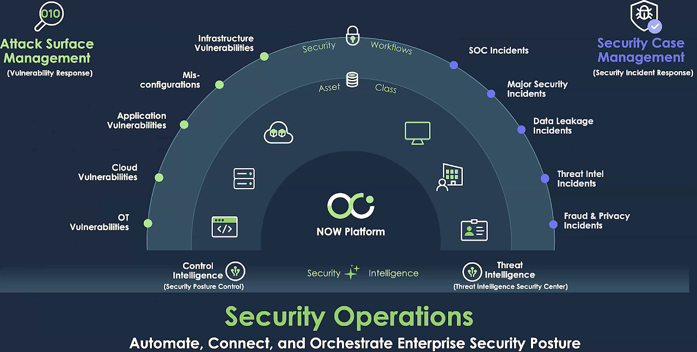

Vulnerability Response
Welcome to Vulnerability Response
Vulnerability response is a proactive and systematic approach to identifying, assessing, and mitigating security vulnerabilities in an organization's systems and infrastructure. It involves a continuous process of monitoring for vulnerabilities, analyzing their potential impact, and prioritizing remediation efforts based on risk. Effective vulnerability response requires collaboration between security teams, IT operations, and business stakeholders to ensure timely and appropriate responses to identified vulnerabilities. It also includes developing and implementing security measures, such as patch management, configuration hardening, and network segmentation, to reduce the risk of exploitation. Regular security audits and vulnerability assessments play a vital role in identifying vulnerabilities and prioritizing remediation efforts. By proactively addressing vulnerabilities, organizations can significantly reduce the risk of successful cyberattacks and protect their sensitive information and assets.
